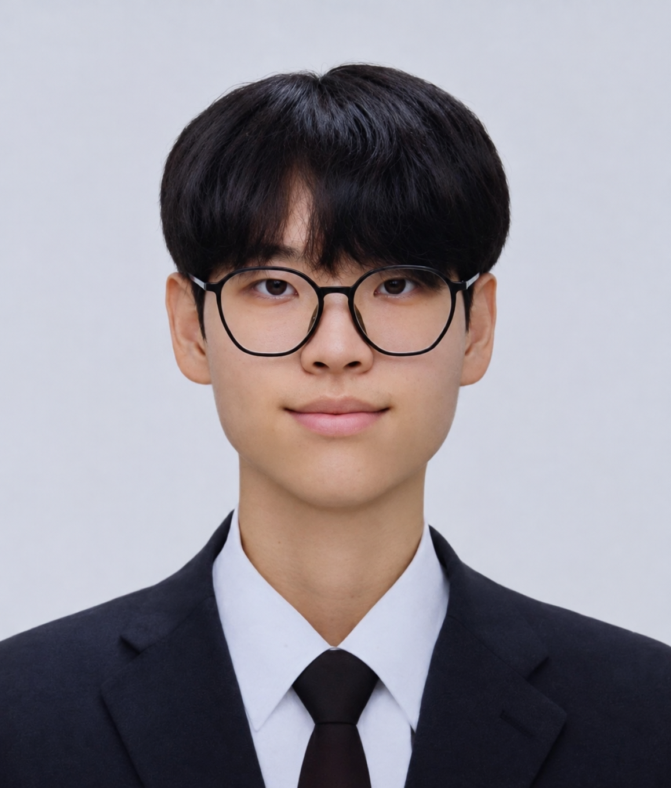
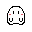

반응형 UI와 공통 컴포넌트 설계·구현
- 프론트엔드 전반을 맡아 홈의 반응형 구조와 상태별 UI를 구현했습니다.
- 기능별 연결 기준과 인계 문서를 정리해 개발 협업을 지원했습니다.
m00n · 귀뚜라미보일러
UI/UX Design & Frontend
사용 흐름을 설계하고,
화면으로 구현합니다.

정보 구조와 화면 상태를 설계하고, 프론트엔드에서 실제 동작으로 연결합니다. 작은 화면에서 필요한 기능에 도달할 수 있는지, 다음 행동이 분명한지를 살피며 UI를 다듬습니다.
Figma에서 레이아웃과 베리언트를 구성하고, 구현 과정에서는 반응형 배치와 공통 UI 상태를 검토합니다. 팀원이 기능을 이어 붙일 수 있도록 연결 지점과 남은 결정을 문서로 정리합니다.
프론트엔드를 구현하면서 기능이 동작하는 것과 편하게 사용할 수 있는 화면을 만드는 것은 다르다는 점을 배웠습니다. 화면을 어떤 순서로 보여주고, 사용자의 다음 행동을 어떻게 도울지 고민하는 과정에 관심이 생겼습니다. 직접 구현해 온 경험을 바탕으로 설계 의도를 화면에 담고, 피드백을 통해 발전시키는 UI/UX 디자이너로 일하고 싶습니다.
Voice Tale × Image Tale에서는 프론트엔드와 UI 작업 대부분을 맡았습니다. 구현에는 AI를 적극 활용했고, 화면의 구성과 동작을 검토하며 수정했습니다. 처음 플레이어를 만들었을 때 팀원에게 “굳이 이렇게 만든 이유가 있어?”, “어떤 의도로 만든 화면이야?”라는 질문을 받았습니다.
그 질문을 계기로 우리 서비스가 이야기를 듣는 것뿐 아니라 글을 함께 읽는 리딩 서비스라는 점을 다시 생각했습니다. 본문도 함께 보여주자는 의견을 받아들여 Spotify와 YouTube Music의 플레이어 구성을 참고하고, 글과 재생 조작을 함께 볼 수 있도록 화면을 수정했습니다. 피드백을 통해 제가 놓친 서비스의 목적을 다시 확인하고, 설계를 바꾼 경험입니다.
제 강점은 부족한 부분을 인정하고 다시 시도하는 끈기입니다. 수정할 점을 들으면 더 잘 만들 기회가 생겼다고 생각하며, 시도한 방법이 잘되지 않더라도 원인을 살피고 다른 방법을 찾으려 합니다. 다만 작은 정렬이나 간격 차이가 눈에 들어오면 이를 바로잡는 데 시간을 오래 쓰기도 합니다. 이를 보완하기 위해 사용에 영향을 주는 문제부터 해결하고, 세부적인 표현은 이후에 다듬는 식으로 작업 순서를 잡으려 합니다.
앞으로 몇 년 동안은 제가 만든 화면이 왜 이렇게 생겼는지, 왜 이 위치에 이 기능이 있어야 하는지 제 말로 설명할 수 있는 디자이너가 되고 싶습니다. 지금은 구현에 AI의 도움을 많이 받고 있지만, 화면을 판단하고 결과를 책임지는 능력은 제가 길러야 한다고 생각합니다. 먼저 팀의 피드백과 실제 사용자의 반응을 통해 제 판단이 맞았는지 확인하는 경험을 쌓고 싶습니다. 그렇게 경험을 쌓아, 몇 년 뒤에는 주어진 화면을 만드는 데서 더 나아가 무엇을 고쳐야 하는지 먼저 발견하고 팀과 함께 해결하는 사람이 되고 싶습니다. 지금도 부족한 점을 들으면 다시 만들어 보고 싶어지는 마음이 있습니다. 실력이 쌓인 뒤에도 그 태도는 잃지 않고 싶습니다.
재학 · 졸업예정
2021.03 ~
취업계 가능
NHN Academy · 수료
2025.12.23 ~ 2026.09.22

흰색의 둥근 형태와 작은 팔다리가 특징인 오리지널 픽셀 캐릭터입니다. 직접 드로잉한 디자인을 바탕으로 Aseprite에서 32×32 픽셀로 제작했습니다.
캐릭터 기획·디자인·픽셀 이미지 제작
등록번호 C-2026-040776
반응형 UI와 공통 컴포넌트 설계·구현
Figma 레이아웃과 베리언트, 프론트엔드 UI
AI를 활용한 웹 구현 · 정보 탐색과 모바일 UI 검토